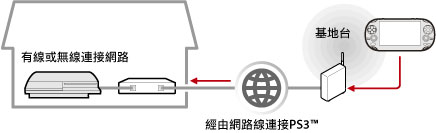

網路 > 如何遙控遊玩（經由網際網路）
如何遙控遊玩（經由網際網路）
若要透過PS Vita或PSP™使用此機能，可能需先更新PS Vita、PSP™或PS3™的系統軟件。
運用PS Vita或PSP™等支援遙控遊玩的裝置的無線LAN機能，可經由網路，從俗稱為熱點等公共無線區域網路的基地台，跟自己家中的PS3™連線。將PS3™調整為預備連線狀態後，即能從遠離家中的場所或海外進行遙控遊玩。

提示
公共無線區域網路的使用方法與費用會因該服務之提供者而異。詳細請詢問該服務的提供者。
事前準備（1）（PS3™與遙控遊玩裝置）
首度使用遙控遊玩時，需先將PS Vita或PSP™等支援遙控遊玩的裝置登錄（配置）至PS3™。請選擇 （設定）＞
（設定）＞ （遙控遊玩設定）＞［登錄裝置］進行設定。
（遙控遊玩設定）＞［登錄裝置］進行設定。
事前準備（2）（遙控遊玩裝置）
新建PS Vita或PSP™等支援遙控遊玩的裝置能與無線基地台連線的網路連線。若要經由網際網路使用遙控遊玩，可利用俗稱為熱點等公共無線區域網路的基地台。有關支援遙控遊玩裝置的網路設定詳情，請參閱各裝置的使用說明書。
使用PS Vita進行遙控遊玩
1. |
操作PS3™，選擇 |
|---|
 （網路）＞
（網路）＞ （遙控遊玩）。
（遙控遊玩）。2. |
輕碰PS Vita的 |
|---|
 （PS3遙控遊玩）＞［啟動］。
（PS3遙控遊玩）＞［啟動］。3. |
輕碰［經由網際網路連線］。 |
|---|
提示
- 透過PS Vita進行遙控遊玩時，若移動至其他應用程式超過30秒，遙控遊玩的連線即會切斷。
- 請將PS3™使用的Sony Entertainment Network帳戶登錄至PS Vita。若已持有在PS Vita或個人電腦上建立的帳戶，亦可將相同帳戶登錄至PS3™。
使用PSP™進行遙控遊玩
1. |
操作PS3™，選擇 |
|---|---|
2. |
操作PSP™，選擇 |
3. |
選擇[經由網際網路連線]。 |
4. |
從連線清單中選擇遙控遊玩時要使用的無線基地台。 |
5. |
輸入PS3™使用的Sony Entertainment Network登入ID和密碼。 |
 （遙控遊玩）。
（遙控遊玩）。經由網際網路進行遙控遊玩時
經由網際網路進行遙控遊玩時，可能會因您使用之網路裝置而出現不成功的現象。此時，請參考以下資訊。
- 請選擇（設定）＞
 （網路設定）＞[網路連線測試]，確認是否能與網際網路和PSNSM連線。
（網路設定）＞[網路連線測試]，確認是否能與網際網路和PSNSM連線。 - 您使用的路由器支援UPnP時，請啟用路由器的UPnP機能，設定為有效。
- 若您使用不支援UPnP的路由器，可能需要設定路由器的Port forwarding，並允許經由網際網路與PS3™通訊。遙控遊玩時使用的Port（埠）號為TCP : 9293。設定方法的詳細說明，請參閱路由器隨附的使用說明書。
- Port forwarding是讓經由特定埠（入口）的訊號通往其他指定埠（出口）的機能。亦被稱為［Port mapping］或［Address conversion］。
- 經由2台以上的路由器與網際網路連線時，PS3™可能無法正確通訊。
提示
- 路由器（Router）乃是能讓數種裝置同時共有一條網路線的裝置。
- 通訊可能因路由器或網路服務商提供的安全性（加密）機能而受到限制。請同時參閱您使用之網路裝置隨附的使用說明書和網路服務商提供之資料。